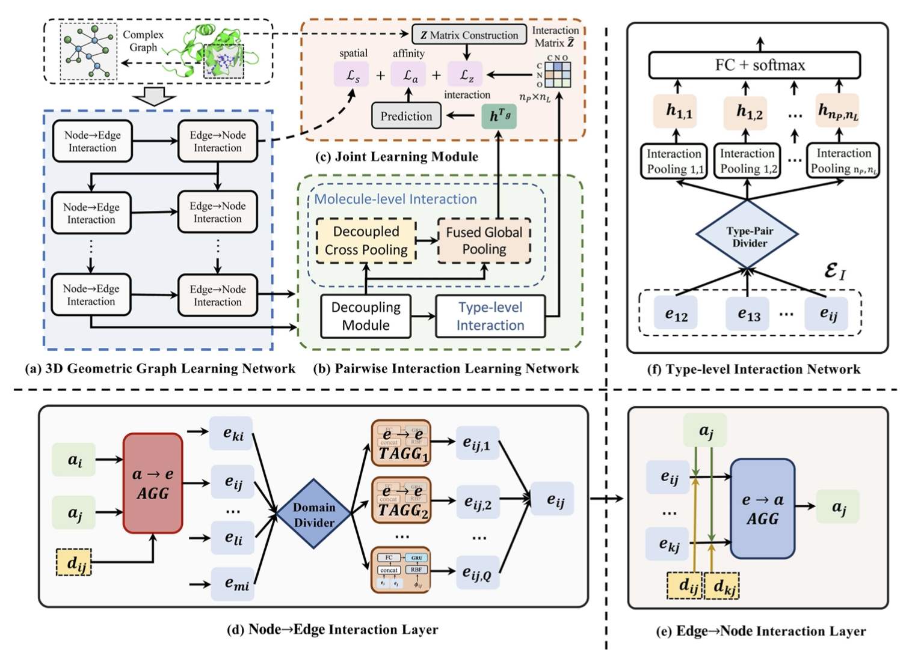
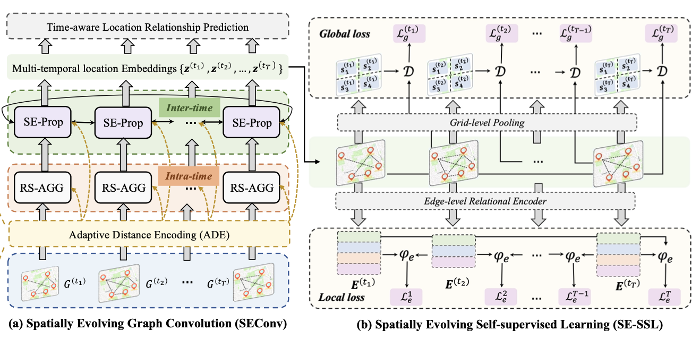
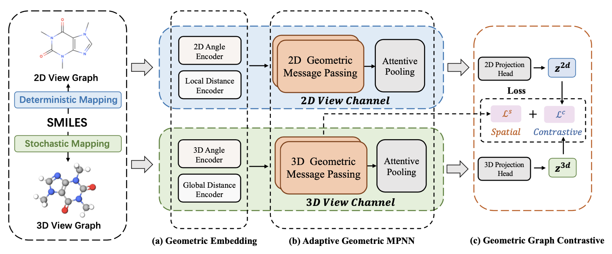
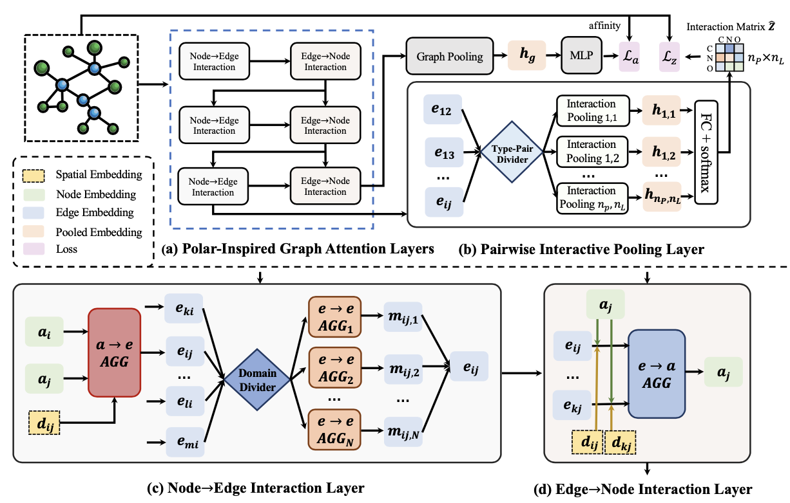
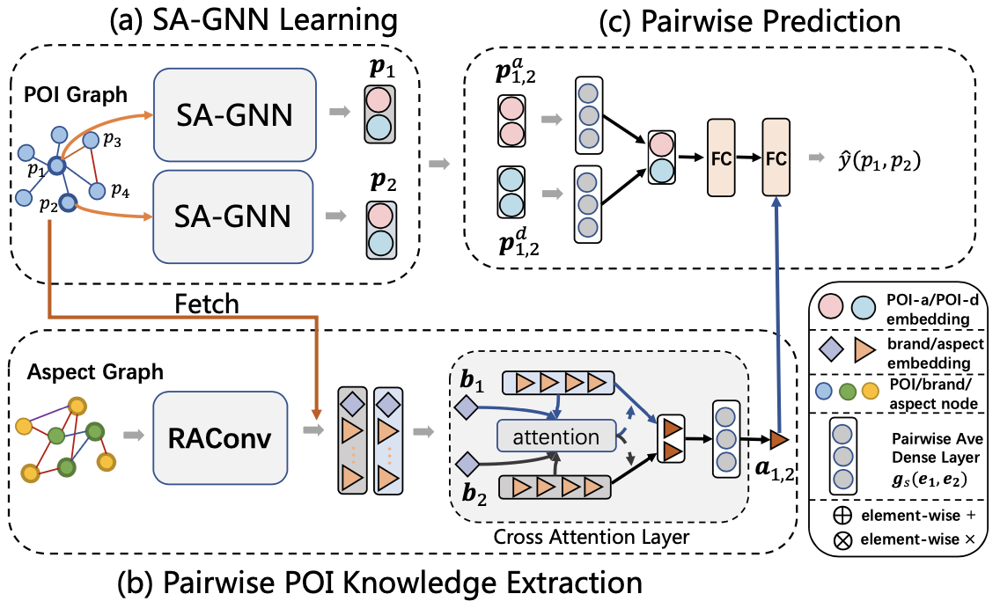

Shuangli Li（李双利）PhD candidateUniversity of Science and Technology of China Email: lsl1997@mail.ustc.edu.cn Google Scholar • GitHub |
Bio
- I am currently a final-year PhD student in Computer Science from University of Science and Technology of China (USTC), supervised by Prof. Hui Xiong（熊辉） (Fellow of AAAS and IEEE). I received my B.S. degree in Computer Science from USTC in 2019. I have also spent time at Business Intelligence Lab, Baidu Inc. as a Research Intern from 2020 to 2024 under the supervision of Dr. Jingbo Zhou（周景博）.
- My general research interest includes data mining and geometric deep learning, focusing on AI4Science, graph represenation learning, and LLM-driven applications. I am on the job market this Fall 2024. If you think my experience would be a good fit for your organization or institution, reach out! You can find my English CV and Chinese CV（中文简历）.
Selected Publications




Structure-aware Interactive Graph Neural Networks for the Prediction of Protein-Ligand Binding Affinity.
Shuangli Li, Jingbo Zhou, Tong Xu, Liang Huang, Fan Wang, Haoyi Xiong, Weili Huang, Dejing Dou, Hui Xiong.
The 27th ACM SIGKDD Conference on Knowledge Discovery and Data Mining (KDD-2021), 2021. One of the most influential papers in KDD'21 (ranked 12/393)
[Paper] [Code]
Shuangli Li, Jingbo Zhou, Tong Xu, Liang Huang, Fan Wang, Haoyi Xiong, Weili Huang, Dejing Dou, Hui Xiong.
The 27th ACM SIGKDD Conference on Knowledge Discovery and Data Mining (KDD-2021), 2021. One of the most influential papers in KDD'21 (ranked 12/393)
[Paper] [Code]

Honors
- Baidu Scholarship Top 20 Candidates. 2023
- SIGKDD Student Travel Award, 2023
- PaddlePaddle Developers Experts (PPDE), 2022
- Global Digital Technology Scholarship. 2022
- Yuan-Qing Scholarship. 2021
- The Champion of CCF Big Data & Computing Intelligence Contest (BDCI). 2021
- National Scholarship. 2020
- National Scholarship. 2020
- Academic Scholarship (USTC), Grad 1. five times from 2019 to 2023
Academic Services
- PC Member, The 30th ACM SIGKDD Conference on Knowledge Discovery and Data Mining (KDD-2024)
- PC Member, The 38th AAAI Conference on Artificial Intelligence (AAAI-2024)
- PC Member, SIAM International Conference on Data Mining (SDM-2024)
- PC Member, The 29th ACM SIGKDD Conference on Knowledge Discovery and Data Mining (KDD-2023)
- PC Member, The 35th AAAI Conference on Artificial Intelligence (AAAI-2021)
- Journal Reviewer, IEEE Transactions on Knowledge and Data Engineering (TKDE)
- Journal Reviewer, IEEE Transactions on Neural Networks and Learning Systems (TNNLS)
- Journal Reviewer, IEEE/ACM Transactions on Computational Biology and Bioinformatics (TCBB)
- Journal Reviewer, Neural Networks